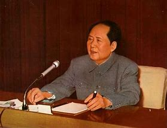

毛泽东 -----人物简介
毛泽东（1893年12月26日-1976年9月9日），字润之（原作咏芝，后改润芝），笔名子任。湖南湘潭人。中国人民的领袖，伟大的马克思主义者，伟大的无产阶级革命家、战略家、理论家，中国共产党、中国人民解放军和中华人民共和国的主要缔造者和领导人，马克思主义中国化的伟大开拓者，近代以来中国伟大的爱国者和民族英雄，中国共产党第一代中央领导集体的核心，领导中国人民彻底改变自己命运和国家面貌的一代伟人。
毛泽东，1893年12月26日生于湖南韶山 一个农民家庭。辛亥革命爆发后在起义的新军中当了半年兵。 1914-1918年，在湖南第一师范学校求学。毕业前夕和蔡和森等组织革命团体新民学会。 五四运动前后接触和接受马克思主义，1920年11月，在湖南创建共产主义组织。 1921年7月，出席在上海召开的中国共产党第一次全国代表大会 ，后任中共湘区委员会书记，领导长沙、安源等地工人运动。 1923年6月，出席中国共产党第三次全国代表大会 ，被选为中央执行委员，参加中央领导工作。 1924年1月国共合作后，在国民党第一、第二次全国代表大会上都当选为候补中央执行委员，曾在广州任国民党中央宣传部代理部长，主编《政治周报》，主办第六届农民运动讲习所。 1926年11月，任中共中央农民运动委员会书记。 1925年冬至1927年春，先后发表《中国社会各阶级的分析》、《湖南农民运动考察报告》等著作，指出农民问题在中国革命中的重要地位和无产阶级领导农民斗争的极端重要性，批评了陈独秀的右倾思想。 国共合作全面破裂后，在1927年8月中共中央紧急会议上，他提出“政权是由枪杆子中取得的”，即以革命武装夺取政权的思想，并被选为中央政治局候补委员。会后，到湖南、江西边界领导秋收起义。接着率起义部队上井冈山，发动土地革命，创立第一个农村革命根据地。 1928年4月，同朱德领导的起义部队会师，成立工农革命军（不久改称红军）第四军，他任党代表、前敌委员会书记。以他为主要代表的中国共产党人，从中国的实际出发，在国民党政权统治比较薄弱的农村发展武装斗争，开创了以农村包围城市、最后夺取城市和全国政权的道路。他在《中国的红色政权为什么能够存在？》、《星星之火，可以燎原》等著作中对这个问题从理论上作了阐述。 1930年5月，写《反对本本主义》，提出“没有调查，没有发言权”的著名论断。8月，红军第一方面军成立，任总政治委员。从1930年底起，同朱德领导红一方面军战胜了国民党军队的多次“围剿”。以王明为代表的“左”倾路线领导集团进入中央革命根据地以后，毛泽东被排斥于党和红军的领导之外，导致红一方面军第五次反“围剿”失败。 1931年11月7日，中华苏维埃共和国临时中央政府在江西瑞金成立，11月27日被选为中央执行委员会主席。 1933年1月，被补选为中共中央政治局委员。
1934年10月，参加红一方面军长征。 长征途中，1935年1月中共中央政治局在贵州召开扩大会议（即遵义会议），确立了以毛泽东为代表的新的中央领导。10月，中共中央和红一方面军到达陕北，结束长征。12月，作《论反对日本帝国主义的策略》的报告，阐明了抗日民族统一战线政策。 1936年10月，红军三大主力会师。1936年12月，同周恩来等促使西安事变和平解决，这成为由内战到第二次国共合作、共同抗日的时局转换的枢纽。同月，写《中国革命战争的战略问题》。 1937年夏，写《实践论》和《矛盾论》。 抗日战争开始后，以他为首的中共中央坚持统一战线中的独立自主原则，努力发动群众，开展敌后游击战争，建立了许多大块的抗日根据地。 1938年10月，在中共扩大的六届六中全会上提出“马克思主义中国化”的指导原则。在抗日战争时期，他发表《论持久战》、《〈共产党人〉发刊词》、《新民主主义论》等重要著作。 1942年2月，领导全党开展整风运动，纠正主观主义和宗派主义，使全党进一步掌握了马克思列宁主义的普遍真理和中国革命的具体实践相结合的基本方向，为夺取抗日战争和全国革命的胜利奠定了思想基础。 1943年3月，被选为中共中央政治局主席。5月，领导根据地军民开展生产运动，度过了严重的经济困难。 1945年4-6月主持召开中国共产党第七次全国代表大会，作《论联合政府》的报告。大会制定了放手发动群众，壮大人民力量，在中国共产党的领导下，打败日本侵略者，解放全国人民，建立一个新民主主义的中国的政治路线 。毛泽东思想在这次大会上被确定为中共的指导思想。他从七届一中全会起至1976年9月9日逝世为止，一直担任中共中央主席。 抗日战争胜利后，针对蒋介石企图消灭共产党及其武装力量的现实，他提出“针锋相对”的斗争方针。1945年8月赴重庆同蒋介石谈判，表明中国共产党争取国内和平的愿望。 1946年夏蒋介石发动全面内战后，毛泽东同朱德、周恩来领导中国人民解放军进行积极防御，集中优势兵力，各个歼灭敌人。 1947年3月-1948年3月，同周恩来、任弼时转战陕北，指挥西北战场和全国的解放战争。1947年夏，中国人民解放军从战略防御转入战略进攻，在以他为首的党中央领导下，经过辽沈、淮海、平津三大战役和1949年4月的渡江战役，推翻了国民党政府。 1949年3月，主持召开中共七届二中全会，并作重要报告，决定把党的工作重心从农村转到城市，规定了党在全国胜利以后的各项基本政策，号召全党务必保持谦虚、谨慎、不骄、不躁的作风，务必继续保持艰苦奋斗的作风。6月30日，发表《论人民民主专政》 ，规定了人民共和国的政权的性质及其对内对外的基本政策。 1949年10月1日，中华人民共和国成立，他当选为中央人民政府主席。